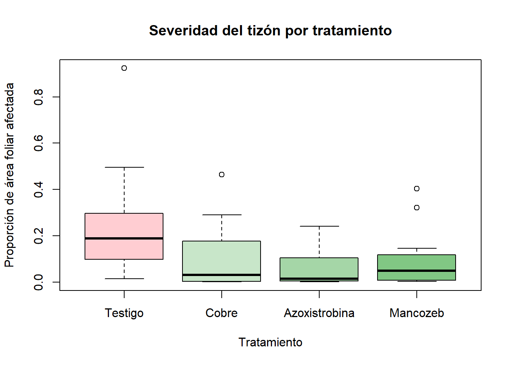

Ver código
library(car)
library(nortest)
source("funciones.R")Un gradiente de campo y una respuesta en forma de proporción
Un productor de papa quiere comparar cuatro tratamientos contra el tizón tardío (Phytophthora infestans). Los tratamientos son: un testigo sin aplicación y tres fungicidas.
El lote está en ladera. La parte alta drena más rápido. La parte baja acumula humedad. La humedad favorece la enfermedad. El lote no es homogéneo.
Un DCA mezclaría el efecto de la pendiente con el efecto del fungicida. Por eso se usa un bloque: una franja del lote perpendicular a la pendiente. Dentro de cada franja las parcelas se parecen entre sí.
| Elemento | En este experimento |
|---|---|
| Objetivo | Comparar la severidad del tizón entre cuatro tratamientos. |
| Población | Parcelas de papa del lote, de la misma variedad y siembra. |
| Factor | Tratamiento (cuatro niveles). |
| Tratamientos | Testigo, Cobre, Azoxistrobina, Mancozeb. |
| Factor de bloqueo | Franja del lote a lo largo de la pendiente (12 bloques). |
| Unidad experimental | La parcela. Cada bloque tiene 4 parcelas. |
| Variable respuesta | Proporción del área foliar con lesiones (valor entre 0 y 1). |
| Aleatorización | Dentro de cada bloque, se sortean los 4 tratamientos entre las 4 parcelas. |
\[ y_{ij} = \mu + \tau_i + \beta_j + \varepsilon_{ij}, \qquad i = 1,\dots,4; \quad j = 1,\dots,12 \]
con \(\varepsilon_{ij} \overset{iid}{\sim} N(0, \sigma^2)\).
| Término | Significado | Por qué es una fuente de variación |
|---|---|---|
| \(y_{ij}\) | Proporción de área afectada en el bloque \(j\) con el tratamiento \(i\) | Es lo que se mide. |
| \(\mu\) | Media general | Es el punto de referencia común. |
| \(\tau_i\) | Efecto del tratamiento \(i\) | Fuente de interés. El investigador eligió los tratamientos. El efecto es fijo. |
| \(\beta_j\) | Efecto del bloque \(j\) | Fuente conocida y no deseada. La pendiente cambia la humedad y la presión de la enfermedad. Se separa del error. |
| \(\varepsilon_{ij}\) | Error experimental | Fuente no controlada. Es la variación entre parcelas dentro de un bloque. |
Dos ideas importantes:
Los grados de libertad son:
| Fuente | GL | Valor aquí |
|---|---|---|
| Bloque | \(b-1\) | 11 |
| Tratamiento | \(t-1\) | 3 |
| Error | \((b-1)(t-1)\) | 33 |
| Total | \(bt-1\) | 47 |
Una proporción vive en el intervalo (0, 1). Cerca de cero tiene asimetría a la derecha. Su varianza depende de su media. Por eso el supuesto de normalidad suele fallar.
Se simula la proporción en la escala logit, con un error amplio. Esto produce valores pequeños frecuentes y algunos valores altos.
set.seed(34)
tratamientos <- c("Testigo", "Cobre", "Azoxistrobina", "Mancozeb")
b <- 12 # bloques
efecto_logit <- c(-1.5, -3.2, -3.8, -3.5) # media en escala logit
# Aleatorización: dentro de cada bloque, orden aleatorio de los tratamientos
diseno <- do.call(rbind, lapply(1:b, function(j) {
data.frame(bloque = j, parcela = 1:4,
tratamiento = sample(tratamientos))
}))
# Efecto de bloque (gradiente de la ladera) y error experimental
efecto_bloque <- rnorm(b, mean = 0, sd = 1.0)
diseno$bloque <- factor(paste0("B", diseno$bloque), levels = paste0("B", 1:b))
diseno$tratamiento <- factor(diseno$tratamiento, levels = tratamientos)
eta <- efecto_logit[as.integer(diseno$tratamiento)] +
efecto_bloque[as.integer(diseno$bloque)] +
rnorm(nrow(diseno), mean = 0, sd = 1.5)
diseno$prop <- plogis(eta) # proporción en (0, 1)
head(diseno, 8) bloque parcela tratamiento prop
1 B1 1 Testigo 0.1151027830
2 B1 2 Mancozeb 0.0064363672
3 B1 3 Azoxistrobina 0.0055101258
4 B1 4 Cobre 0.0007366242
5 B2 1 Cobre 0.0021705150
6 B2 2 Mancozeb 0.0193688743
7 B2 3 Azoxistrobina 0.0614659256
8 B2 4 Testigo 0.1812885139Se probaron varias semillas y se escogió la 34. Esta semilla produce residuales claramente no normales. Con otras semillas la normalidad puede no fallar con solo 48 parcelas. En un estudio real no se escoge la semilla: se diagnostica lo que salga.

Analysis of Variance Table
Response: prop
Df Sum Sq Mean Sq F value Pr(>F)
bloque 11 0.50681 0.046074 2.2069 0.03905 *
tratamiento 3 0.26407 0.088024 4.2162 0.01249 *
Residuals 33 0.68896 0.020878
---
Signif. codes: 0 '***' 0.001 '**' 0.01 '*' 0.05 '.' 0.1 ' ' 1 prueba estadistico valor_p decision
1 Shapiro-Wilk 0.9020 0.000728 Rechaza normalidad
2 Anderson-Darling 1.5704 0.000421 Rechaza normalidad
3 Lilliefors (K-S) 0.1428 0.015700 Rechaza normalidad prueba estadistico gl valor_p
1 Levene (centro: mediana) 1.3641 3 y 44 0.266
decision
1 No rechaza homocedasticidadLas tres pruebas de normalidad rechazan el supuesto. El gráfico Q-Q muestra puntos extremos que se alejan de la recta, sobre todo arriba. El gráfico de residuales muestra que la dispersión crece con el valor ajustado. El ANOVA sobre la proporción original no es confiable. Hace falta una transformación.
El sistema de Johnson lleva una variable no normal a una normal con una función de tres familias:
| Familia | Transformación | Cuándo se usa |
|---|---|---|
| SB (acotada) | \(z = \gamma + \delta \ln\!\dfrac{y-\xi}{\xi+\lambda-y}\) | La variable vive en un intervalo \((\xi,\ \xi+\lambda)\). Es el caso de las proporciones. |
| SL (log-normal) | \(z = \gamma + \delta \ln(y-\xi)\) | La variable tiene un límite inferior y cola derecha. |
| SU (no acotada) | \(z = \gamma + \delta\, \mathrm{asinh}\!\dfrac{y-\xi}{\lambda}\) | La variable no tiene límites. |
Los parámetros \(\gamma\) y \(\delta\) centran y escalan. Los parámetros \(\xi\) y \(\lambda\) fijan la posición y la amplitud del intervalo.
El paquete Johnson no siempre está disponible. Esta función en R base ajusta las tres familias. Elige la familia y los parámetros que maximizan el estadístico W de Shapiro–Wilk de la variable transformada.
johnson_transformar <- function(x) {
xmin <- min(x); xmax <- max(x); rango <- xmax - xmin
W <- function(v) if (any(!is.finite(v))) 0 else unname(shapiro.test(v)$statistic)
lim <- function(p) pmin(pmax(p, -10), 6)
# SB: límites a, b fuera del rango observado
f_sb <- function(p, x) {
p <- lim(p); a <- xmin - exp(p[1]) * rango; b <- xmax + exp(p[2]) * rango
u <- (x - a) / (b - a); log(u / (1 - u))
}
o_sb <- optim(c(log(.05), log(.05)), function(p) -W(f_sb(p, x)), method = "Nelder-Mead")
# SL: log-normal desplazada
f_sl <- function(p, x) log(x - (xmin - exp(lim(p)) * rango))
o_sl <- optim(log(.05), function(p) -W(f_sl(p, x)),
method = "Brent", lower = -10, upper = 6)
# SU: no acotada
f_su <- function(p, x) asinh((x - p[1]) / exp(p[2]))
o_su <- optim(c(median(x), log(sd(x))), function(p) -W(f_su(p, x)), method = "Nelder-Mead")
cand <- list(SB = list(o = o_sb, f = f_sb),
SL = list(o = o_sl, f = f_sl),
SU = list(o = o_su, f = f_su))
Ws <- sapply(cand, function(k) -k$o$value)
tipo <- names(which.max(Ws))
p <- cand[[tipo]]$o$par
crudo <- cand[[tipo]]$f(p, x)
delta <- 1 / sd(crudo) # escala
gamma <- -mean(crudo) * delta # centro
# Parámetros de posición y amplitud (xi, lambda)
pars <- switch(tipo,
SB = c(xi = xmin - exp(lim(p)[1]) * rango,
lambda = (xmax + exp(lim(p)[2]) * rango) - (xmin - exp(lim(p)[1]) * rango)),
SL = c(xi = xmin - exp(lim(p)) * rango, lambda = NA),
SU = c(xi = p[1], lambda = exp(p[2])))
list(tipo = tipo, W_por_familia = Ws, gamma = gamma, delta = delta,
xi = unname(pars["xi"]), lambda = unname(pars["lambda"]),
y = gamma + delta * crudo)
}
# Transformación inversa: de la escala z a la escala original
johnson_inversa <- function(j, z) {
s <- (z - j$gamma) / j$delta
switch(j$tipo,
SB = j$xi + j$lambda / (1 + exp(-s)),
SL = j$xi + exp(s),
SU = j$xi + j$lambda * sinh(s))
}[1] "SB" SB SL SU
0.9693 0.9366 0.9366 gamma delta xi lambda
1.3336 0.4315 0.0006 0.9797 La familia elegida es SB. Esto tiene sentido: la proporción es una variable acotada.
Analysis of Variance Table
Response: prop_j
Df Sum Sq Mean Sq F value Pr(>F)
bloque 11 19.863 1.8057 3.5158 0.002473 **
tratamiento 3 10.188 3.3962 6.6125 0.001272 **
Residuals 33 16.949 0.5136
---
Signif. codes: 0 '***' 0.001 '**' 0.01 '*' 0.05 '.' 0.1 ' ' 1 prueba estadistico valor_p decision
1 Shapiro-Wilk 0.9816 0.647 No rechaza normalidad
2 Anderson-Darling 0.2092 0.855 No rechaza normalidad
3 Lilliefors (K-S) 0.0582 0.952 No rechaza normalidad prueba estadistico gl valor_p
1 Levene (centro: mediana) 1.1651 3 y 44 0.334
decision
1 No rechaza homocedasticidadCompare con la sección 4. Los valores p de normalidad suben. El gráfico Q-Q se acerca a la recta.
El resultado se debe reportar en la escala de la proporción. Se promedia en la escala transformada y se aplica la función inversa.
tratamiento media_z proporcion
1 Testigo 0.765 0.2076
2 Cobre -0.294 0.0226
3 Azoxistrobina -0.417 0.0172
4 Mancozeb -0.054 0.0383La media retro-transformada se parece a una mediana, no a la media aritmética. Dígalo en el informe.
La eficiencia relativa compara el DBCA con un DCA hipotético:
\[ ER = \frac{(b-1)\,CM_{\text{bloque}} + b\,(t-1)\,CM_{\text{error}}}{(bt-1)\,CM_{\text{error}}} \]
Una \(ER > 1\) indica que el DCA habría necesitado más réplicas para igualar la precisión del DBCA. Por ejemplo, una \(ER = 1{,}5\) significa que el DCA necesitaría un 50 % más de parcelas por tratamiento.
[1] 1.589Johnson no es la única opción para una proporción.
| Opción | Idea | Nota |
|---|---|---|
| Logit | \(\ln\frac{y}{1-y}\) | Simple. Falla si hay ceros o unos exactos. |
| Arcoseno–raíz | \(\arcsin\sqrt{y}\) | Tradicional en agronomía. Hoy se desaconseja. |
| Regresión beta | Modelo con distribución beta | Modela la proporción sin transformar. Paquete betareg. |
| GLM binomial | Si hay conteos (n lesionadas de N) | Usa la información del denominador. |
| Ventajas | Desventajas | |
|---|---|---|
| Precisión | Separa la variación del gradiente. Reduce el error experimental. | Pierde GL del error: \((b-1)\) grados se van al bloque. |
| Validez | Controla un gradiente conocido. Evita la confusión con el tratamiento. | Si el bloqueo es inútil, el diseño pierde potencia. |
| Flexibilidad | Admite cualquier número de tratamientos. | Cada bloque debe contener todos los tratamientos. |
| Datos perdidos | — | Una parcela perdida desbalancea el diseño. Exige estimar el dato faltante o usar un modelo mixto. |
| Supuestos | — | Supone aditividad: sin interacción bloque × tratamiento. |
| Control local | Controla un gradiente. | No controla un segundo gradiente. Para eso existe el cuadro latino. |
Continúe con DCL. Allí se controlan dos gradientes a la vez.
---
title: "DBCA · Diseño en bloques completos al azar"
subtitle: "Un gradiente de campo y una respuesta en forma de proporción"
---
## 1. El experimento
### Contexto
Un productor de papa quiere comparar **cuatro tratamientos** contra el tizón tardío (*Phytophthora infestans*). Los tratamientos son: un testigo sin aplicación y tres fungicidas.
El lote está en **ladera**. La parte alta drena más rápido. La parte baja acumula humedad. La humedad favorece la enfermedad. El lote **no es homogéneo**.
Un DCA mezclaría el efecto de la pendiente con el efecto del fungicida. Por eso se usa un **bloque**: una franja del lote perpendicular a la pendiente. Dentro de cada franja las parcelas se parecen entre sí.
### Descripción completa
| Elemento | En este experimento |
|---|---|
| **Objetivo** | Comparar la severidad del tizón entre cuatro tratamientos. |
| **Población** | Parcelas de papa del lote, de la misma variedad y siembra. |
| **Factor** | Tratamiento (cuatro niveles). |
| **Tratamientos** | Testigo, Cobre, Azoxistrobina, Mancozeb. |
| **Factor de bloqueo** | Franja del lote a lo largo de la pendiente (12 bloques). |
| **Unidad experimental** | La **parcela**. Cada bloque tiene 4 parcelas. |
| **Variable respuesta** | Proporción del área foliar con lesiones (valor entre 0 y 1). |
| **Aleatorización** | Dentro de **cada bloque**, se sortean los 4 tratamientos entre las 4 parcelas. |
---
## 2. El modelo
$$
y_{ij} = \mu + \tau_i + \beta_j + \varepsilon_{ij}, \qquad i = 1,\dots,4; \quad j = 1,\dots,12
$$
con $\varepsilon_{ij} \overset{iid}{\sim} N(0, \sigma^2)$.
| Término | Significado | Por qué es una fuente de variación |
|---|---|---|
| $y_{ij}$ | Proporción de área afectada en el bloque $j$ con el tratamiento $i$ | Es lo que se mide. |
| $\mu$ | Media general | Es el punto de referencia común. |
| $\tau_i$ | Efecto del tratamiento $i$ | **Fuente de interés.** El investigador eligió los tratamientos. El efecto es **fijo**. |
| $\beta_j$ | Efecto del bloque $j$ | **Fuente conocida y no deseada.** La pendiente cambia la humedad y la presión de la enfermedad. Se **separa** del error. |
| $\varepsilon_{ij}$ | Error experimental | **Fuente no controlada.** Es la variación entre parcelas **dentro** de un bloque. |
Dos ideas importantes:
1. **El bloque no es un tratamiento.** No se prueba su efecto. Se incluye para **restarlo** del error.
2. **No hay interacción bloque × tratamiento.** Cada celda tiene una sola parcela. El modelo supone que los tratamientos actúan igual en todos los bloques (aditividad).
Los grados de libertad son:
| Fuente | GL | Valor aquí |
|---|---|---|
| Bloque | $b-1$ | 11 |
| Tratamiento | $t-1$ | 3 |
| Error | $(b-1)(t-1)$ | 33 |
| Total | $bt-1$ | 47 |
---
## 3. Simulación de la proporción
Una proporción vive en el intervalo (0, 1). Cerca de cero tiene **asimetría a la derecha**. Su varianza depende de su media. Por eso el supuesto de normalidad suele fallar.
Se simula la proporción en la escala logit, con un error amplio. Esto produce valores pequeños frecuentes y algunos valores altos.
```{r}
#| label: paquetes
library(car)
library(nortest)
source("funciones.R")
```
```{r}
#| label: simulacion-dbca
set.seed(34)
tratamientos <- c("Testigo", "Cobre", "Azoxistrobina", "Mancozeb")
b <- 12 # bloques
efecto_logit <- c(-1.5, -3.2, -3.8, -3.5) # media en escala logit
# Aleatorización: dentro de cada bloque, orden aleatorio de los tratamientos
diseno <- do.call(rbind, lapply(1:b, function(j) {
data.frame(bloque = j, parcela = 1:4,
tratamiento = sample(tratamientos))
}))
# Efecto de bloque (gradiente de la ladera) y error experimental
efecto_bloque <- rnorm(b, mean = 0, sd = 1.0)
diseno$bloque <- factor(paste0("B", diseno$bloque), levels = paste0("B", 1:b))
diseno$tratamiento <- factor(diseno$tratamiento, levels = tratamientos)
eta <- efecto_logit[as.integer(diseno$tratamiento)] +
efecto_bloque[as.integer(diseno$bloque)] +
rnorm(nrow(diseno), mean = 0, sd = 1.5)
diseno$prop <- plogis(eta) # proporción en (0, 1)
head(diseno, 8)
```
::: {.callout-note}
## Sobre la semilla
Se probaron varias semillas y se escogió la **34**. Esta semilla produce residuales claramente no normales. Con otras semillas la normalidad puede no fallar con solo 48 parcelas. En un estudio real no se escoge la semilla: se diagnostica lo que salga.
:::
```{r}
#| label: boxplot-dbca
boxplot(prop ~ tratamiento, data = diseno,
col = c("#ffcdd2", "#c8e6c9", "#a5d6a7", "#81c784"),
ylab = "Proporción de área foliar afectada", xlab = "Tratamiento",
main = "Severidad del tizón por tratamiento")
```
---
## 4. Análisis con la respuesta original
```{r}
#| label: anova-original
m_crudo <- lm(prop ~ bloque + tratamiento, data = diseno)
anova(m_crudo)
```
### Diagnóstico de los residuales
```{r}
#| label: diag-original
d_crudo <- diagnostico(m_crudo, diseno$tratamiento)
d_crudo$normalidad
d_crudo$levene
```
```{r}
#| label: graf-original
#| fig-height: 4
graficos_diagnostico(m_crudo)
```
::: {.callout-warning}
## Los residuales no son normales
Las tres pruebas de normalidad rechazan el supuesto. El gráfico Q-Q muestra puntos extremos que se alejan de la recta, sobre todo arriba. El gráfico de residuales muestra que la dispersión crece con el valor ajustado. El ANOVA sobre la proporción original **no es confiable**. Hace falta una transformación.
:::
---
## 5. Transformación tipo Johnson
### La idea
El sistema de Johnson lleva una variable no normal a una normal con una función de tres familias:
| Familia | Transformación | Cuándo se usa |
|---|---|---|
| **SB** (acotada) | $z = \gamma + \delta \ln\!\dfrac{y-\xi}{\xi+\lambda-y}$ | La variable vive en un intervalo $(\xi,\ \xi+\lambda)$. **Es el caso de las proporciones.** |
| **SL** (log-normal) | $z = \gamma + \delta \ln(y-\xi)$ | La variable tiene un límite inferior y cola derecha. |
| **SU** (no acotada) | $z = \gamma + \delta\, \mathrm{asinh}\!\dfrac{y-\xi}{\lambda}$ | La variable no tiene límites. |
Los parámetros $\gamma$ y $\delta$ centran y escalan. Los parámetros $\xi$ y $\lambda$ fijan la **posición** y la **amplitud** del intervalo.
### La función
El paquete `Johnson` no siempre está disponible. Esta función en R base ajusta las tres familias. Elige la familia y los parámetros que **maximizan el estadístico W de Shapiro–Wilk** de la variable transformada.
```{r}
#| label: funcion-johnson
johnson_transformar <- function(x) {
xmin <- min(x); xmax <- max(x); rango <- xmax - xmin
W <- function(v) if (any(!is.finite(v))) 0 else unname(shapiro.test(v)$statistic)
lim <- function(p) pmin(pmax(p, -10), 6)
# SB: límites a, b fuera del rango observado
f_sb <- function(p, x) {
p <- lim(p); a <- xmin - exp(p[1]) * rango; b <- xmax + exp(p[2]) * rango
u <- (x - a) / (b - a); log(u / (1 - u))
}
o_sb <- optim(c(log(.05), log(.05)), function(p) -W(f_sb(p, x)), method = "Nelder-Mead")
# SL: log-normal desplazada
f_sl <- function(p, x) log(x - (xmin - exp(lim(p)) * rango))
o_sl <- optim(log(.05), function(p) -W(f_sl(p, x)),
method = "Brent", lower = -10, upper = 6)
# SU: no acotada
f_su <- function(p, x) asinh((x - p[1]) / exp(p[2]))
o_su <- optim(c(median(x), log(sd(x))), function(p) -W(f_su(p, x)), method = "Nelder-Mead")
cand <- list(SB = list(o = o_sb, f = f_sb),
SL = list(o = o_sl, f = f_sl),
SU = list(o = o_su, f = f_su))
Ws <- sapply(cand, function(k) -k$o$value)
tipo <- names(which.max(Ws))
p <- cand[[tipo]]$o$par
crudo <- cand[[tipo]]$f(p, x)
delta <- 1 / sd(crudo) # escala
gamma <- -mean(crudo) * delta # centro
# Parámetros de posición y amplitud (xi, lambda)
pars <- switch(tipo,
SB = c(xi = xmin - exp(lim(p)[1]) * rango,
lambda = (xmax + exp(lim(p)[2]) * rango) - (xmin - exp(lim(p)[1]) * rango)),
SL = c(xi = xmin - exp(lim(p)) * rango, lambda = NA),
SU = c(xi = p[1], lambda = exp(p[2])))
list(tipo = tipo, W_por_familia = Ws, gamma = gamma, delta = delta,
xi = unname(pars["xi"]), lambda = unname(pars["lambda"]),
y = gamma + delta * crudo)
}
# Transformación inversa: de la escala z a la escala original
johnson_inversa <- function(j, z) {
s <- (z - j$gamma) / j$delta
switch(j$tipo,
SB = j$xi + j$lambda / (1 + exp(-s)),
SL = j$xi + exp(s),
SU = j$xi + j$lambda * sinh(s))
}
```
### Aplicación a la proporción
```{r}
#| label: aplicar-johnson
j <- johnson_transformar(diseno$prop)
diseno$prop_j <- j$y
j$tipo
round(j$W_por_familia, 4)
round(c(gamma = j$gamma, delta = j$delta, xi = j$xi, lambda = j$lambda), 4)
```
La familia elegida es **SB**. Esto tiene sentido: la proporción es una variable acotada.
::: {.callout-note}
## Dos advertencias
1. La función ajusta los parámetros sobre **toda la respuesta**, no sobre los residuales. Es la práctica habitual de los programas estadísticos.
2. Al maximizar W en la misma muestra, el resultado es algo optimista. Use la transformación como ayuda, no como prueba de normalidad.
:::
---
## 6. Análisis con la respuesta transformada
```{r}
#| label: anova-johnson
m_j <- lm(prop_j ~ bloque + tratamiento, data = diseno)
anova(m_j)
```
```{r}
#| label: diag-johnson
d_j <- diagnostico(m_j, diseno$tratamiento)
d_j$normalidad
d_j$levene
```
```{r}
#| label: graf-johnson
#| fig-height: 4
graficos_diagnostico(m_j)
```
Compare con la sección 4. Los valores p de normalidad suben. El gráfico Q-Q se acerca a la recta.
### Medias en la escala original
El resultado se debe reportar en la escala de la proporción. Se promedia en la escala transformada y se aplica la función inversa.
```{r}
#| label: medias-johnson
medias_z <- tapply(diseno$prop_j, diseno$tratamiento, mean)
data.frame(
tratamiento = names(medias_z),
media_z = round(as.numeric(medias_z), 3),
proporcion = round(johnson_inversa(j, as.numeric(medias_z)), 4)
)
```
::: {.callout-note}
## Interpretación
La media retro-transformada se parece a una **mediana**, no a la media aritmética. Dígalo en el informe.
:::
---
## 7. ¿Valió la pena bloquear?
La **eficiencia relativa** compara el DBCA con un DCA hipotético:
$$
ER = \frac{(b-1)\,CM_{\text{bloque}} + b\,(t-1)\,CM_{\text{error}}}{(bt-1)\,CM_{\text{error}}}
$$
Una $ER > 1$ indica que el DCA habría necesitado **más réplicas** para igualar la precisión del DBCA. Por ejemplo, una $ER = 1{,}5$ significa que el DCA necesitaría un 50 % más de parcelas por tratamiento.
```{r}
#| label: eficiencia-relativa
tab <- anova(m_j)
CMB <- tab["bloque", "Mean Sq"]
CME <- tab["Residuals", "Mean Sq"]
t_ <- 4
ER <- ((b - 1) * CMB + b * (t_ - 1) * CME) / ((b * t_ - 1) * CME)
round(ER, 3)
```
---
## 8. Alternativas a Johnson
Johnson no es la única opción para una proporción.
| Opción | Idea | Nota |
|---|---|---|
| **Logit** | $\ln\frac{y}{1-y}$ | Simple. Falla si hay ceros o unos exactos. |
| **Arcoseno–raíz** | $\arcsin\sqrt{y}$ | Tradicional en agronomía. Hoy se desaconseja. |
| **Regresión beta** | Modelo con distribución beta | Modela la proporción sin transformar. Paquete `betareg`. |
| **GLM binomial** | Si hay conteos (n lesionadas de N) | Usa la información del denominador. |
---
## 9. Ventajas y desventajas del DBCA
| | Ventajas | Desventajas |
|---|---|---|
| **Precisión** | Separa la variación del gradiente. Reduce el error experimental. | Pierde GL del error: $(b-1)$ grados se van al bloque. |
| **Validez** | Controla un gradiente conocido. Evita la confusión con el tratamiento. | Si el bloqueo es inútil, el diseño pierde potencia. |
| **Flexibilidad** | Admite cualquier número de tratamientos. | Cada bloque debe contener **todos** los tratamientos. |
| **Datos perdidos** | — | Una parcela perdida desbalancea el diseño. Exige estimar el dato faltante o usar un modelo mixto. |
| **Supuestos** | — | Supone aditividad: sin interacción bloque × tratamiento. |
| **Control local** | Controla **un** gradiente. | No controla un segundo gradiente. Para eso existe el cuadro latino. |
::: {.callout-tip}
## Siguiente paso
Continúe con **DCL**. Allí se controlan **dos** gradientes a la vez.
:::